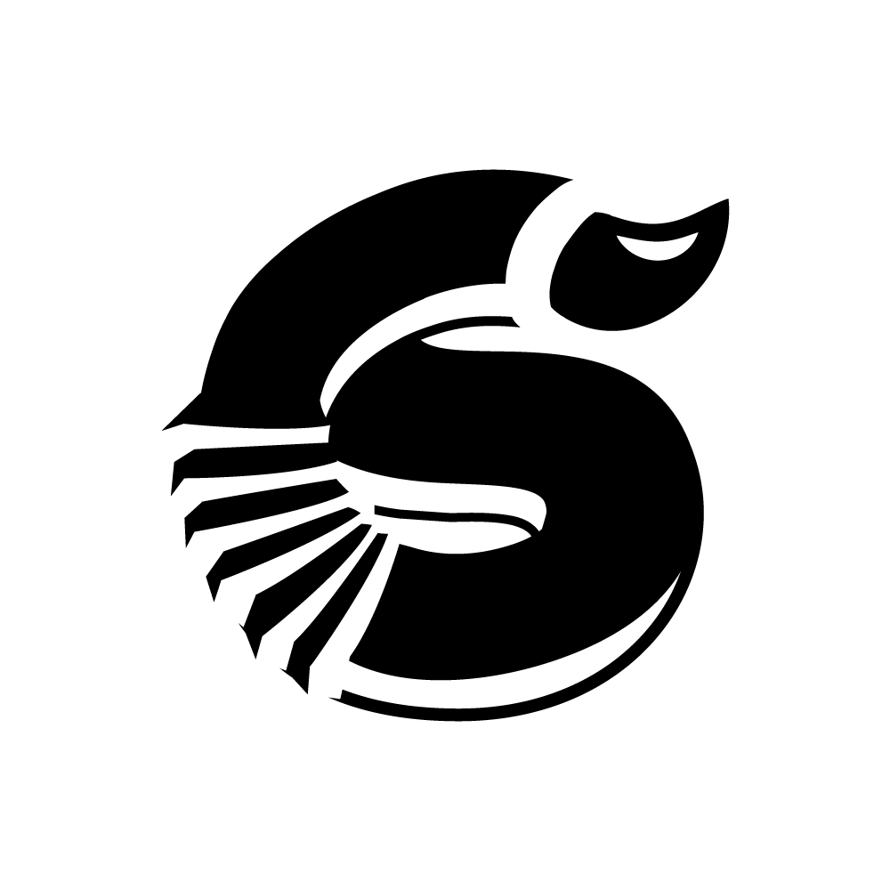
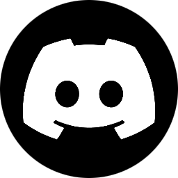
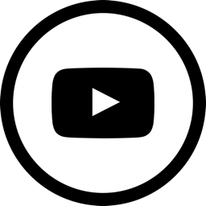
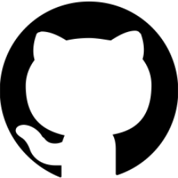

Toggle

Un serveur discord français centré sur la musique et l'art (rap, beatmaking, chant, tout type d'instrument et bien plus).
Retrouves des animations régulières et variées ainsi qu'un staff à l'écoute !


